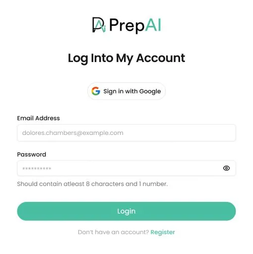

Make the best version of learning with visuals
Struggling to engage your audience? Add visuals with PrepAI’s latest
image-based AI question generation
Enhance your AI quizzes with visual elements like diagrams, graphs, and images to improve comprehension. Ideal for subjects like science, geography, history, or in-depth problem-solving assessment, this feature allows you to present complex concepts clearly and effectively. With image-based results, learners can visualize information better, and answer questions with clarity leading to deeper understanding and more efficient learning.
Multiple input options, quick test generation, various question formats, AI-backed grading and feedback, and other premium add-ons—experience all with PrepAI!
Enhance your quizzes with image-based question generation. Ideal for subjects requiring visual aids, this feature allows you to incorporate diagrams, charts, and images, making complex concepts easier to understand.
Take an image-based online test anytime, anywhere with PrepAI’s seamless mobile dashboard experience, which is user-friendly, intuitive, and accessible to any mobile device/tablet.
Schedual a Product DemoA step-by-step guide to generating image-based quizzes in an AI question creator.
Access your PrepAI account by logging in or create new >
Access your PrepAI account by logging in or create new >
Access your PrepAI account by logging in or create new >
Access your PrepAI account by logging in or create new >
Access your PrepAI account by logging in or create new >
I’ve been struggling to find engaging ways to test our candidates’ problem-solving skills. PrepAI’s image-based AI quizzes have made this a lot easier! The visuals make the assessments more realistic and help us identify candidates with a strong analytical mindset.
I’ve been struggling to find engaging ways to test our candidates’ problem-solving skills. PrepAI’s image-based AI quizzes have made this a lot easier! The visuals make the assessments more realistic and help us identify candidates with a strong analytical mindset.
I’ve been struggling to find engaging ways to test our candidates’ problem-solving skills. PrepAI’s image-based AI quizzes have made this a lot easier! The visuals make the assessments more realistic and help us identify candidates with a strong analytical mindset.
Struggling to engage your audience? Add visuals with PrepAI’s latest
image-based AI question generation